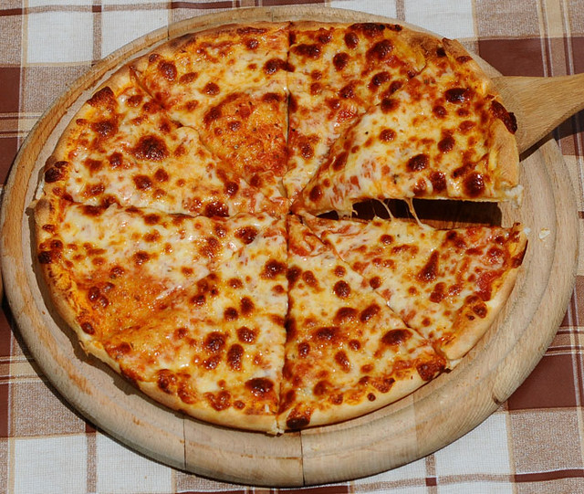
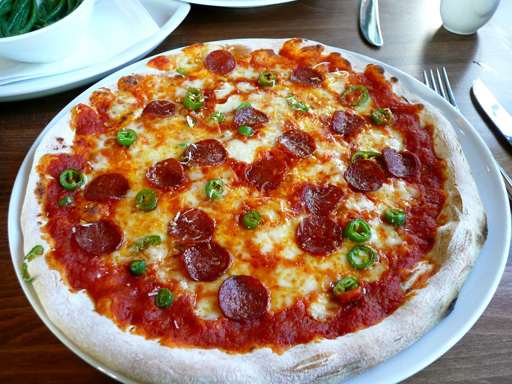

Menu
Margherita
Clássica pizza italiana com molho de tomate, mussarela fresca, manjericão e azeite de oliva.
Marinara

Molho de tomate, alho, orégano, azeite de oliva extra virgem.
Capricciosa

Molho de tomate, queijo mozzarella fresco, cogumelos, presunto cozido, alcachofras, azeitonas pretas, azeite de oliva.
Quattro Stagioni

Molho de tomate, queijo mozzarella fresco, presunto cozido, alcachofras, cogumelos, azeitonas pretas.
Prosciutto e Funghi

Molho de tomate, queijo mozzarella fresco, presunto cru (prosciutto), cogumelos, azeite de oliva.
Quattro Formaggi

Molho de tomate ou creme de queijo, uma mistura de quatro queijos (como mozzarella, gorgonzola, parmesão e provolone), azeite de oliva.
Diavola
Molho de tomate, queijo mozzarella fresco, salame picante ou peperoni, azeite de oliva.
Napoletana

Molho de tomate, anchovas, azeitonas pretas, alcaparras, orégano, azeite de oliva.